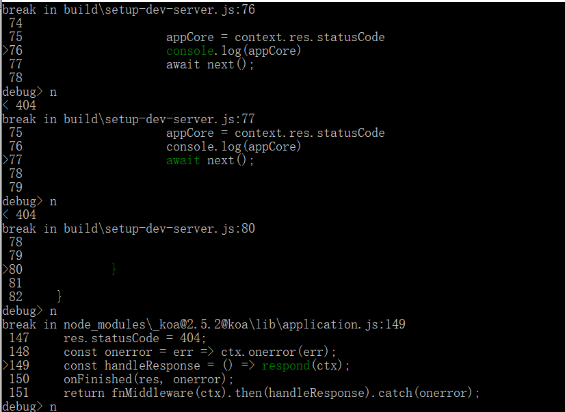
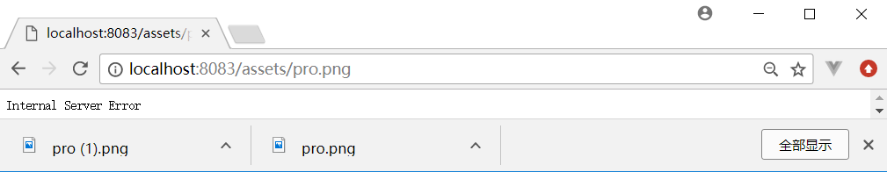
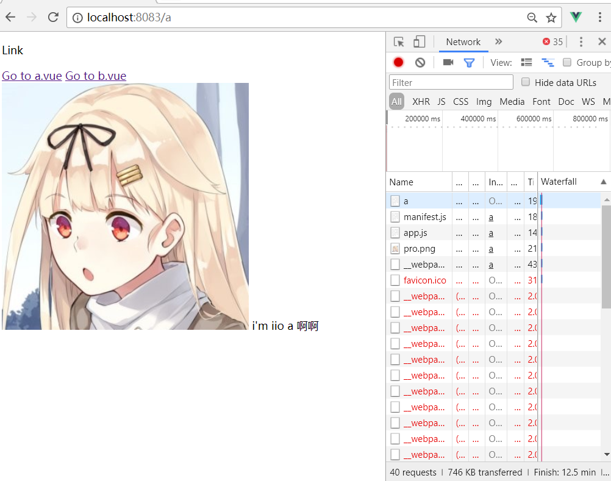
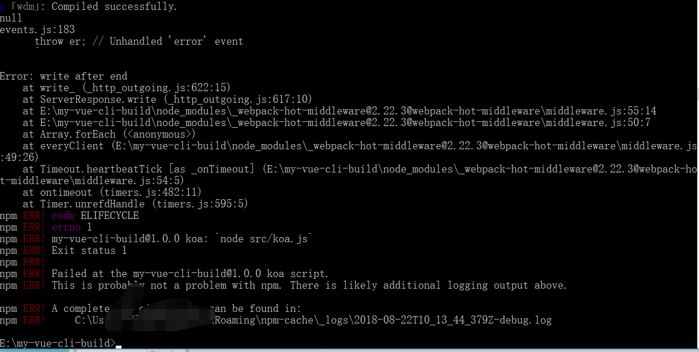
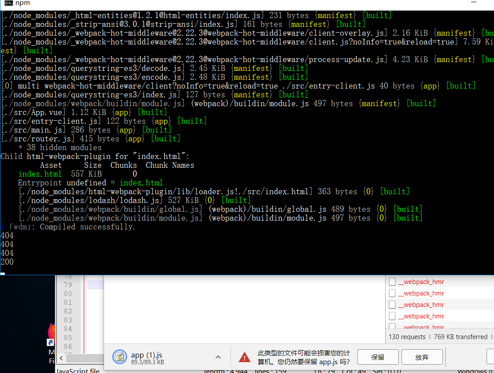

这是一个SSR实例的踩坑，教程去看vue官网的SSR指南
无意中发现
1 | export function a(){ |

官网上给的示例，记住跳到构建配置，配置client和server。


服务器渲染的输出结果，你会注意到应用程序的根元素上添加了一个特殊的属性：
2
3
4
5
6
renderer.renderToString(context,(err,html) =>{
resolve(html);
console.log(html);
})
}) )构建成功后的项目，会像上面那两张图的样子，难是挺难的，即使有教程(教程对于一些东西写得很迷糊，大概是我的理解能力问题)。我使用的是koa.js 记住要用generator or promise and es7的await(模板你最好也设置下，我是text/plain的，没有<!doctype>会进入怪异模式)。vue-router先不要设置，不然里面是个巨坑，明天再搞，今天太迟了，不过也总算知道SSR的真实面貌了。
02点19分，mark。
1 | <div id="app" data-server-rendered="true"> |
setup-dev-server
为什么404 但是返回的内容是正确的？这是一个什么样的文件？ Link
目的是为了把client.json server.json 在内存中被koa所读取，创建
setupDevServer(app, templatePath, callback) app就是new Koa() ,templatePath就是Index.html (dist那个 创建的话 不要dist那个 要index.template.html 为嘛？webpak常识 = =！)，
callback就是createBundleRender。报错 next is not a function
这个时候果断去看源码啦！下面是根据main:index.js推断代码在middware.js (你看报错内容也行)
2
3
4
5
6
7
8
9
10
11
12
if (!context.options.serverSideRender) {
return next();
}
return new Promise(((resolve) => {
ready(context, () => {
res.locals.webpackStats = context.webpackStats;
resolve(next());
}, req);
}));
}Koa v2.x 的中间件是基于 Promise 的
所以我需要primise,所以要把context.options.serverSideRender = true。
1 | use(fn) { |
listen -->
1 | listen(...args) { |
callback -->/**
- This is the common logic for both the Node.js and web browser
- implementations of
debug().
*- Expose
debug()as the module.
*/
debug 不深究
1 | callback() { |
onerror -->
2
3
4
5
6
7
8
9
10
11
12
13
14
15
16
17
18
19
20
21
22
23
24
25
26
27
28
29
30
if (!Array.isArray(middleware)) throw new TypeError(‘Middleware stack must be an array!’)
for (const fn of middleware) {
if (typeof fn !== ‘function’) throw new TypeError(‘Middleware must be composed of functions!’)
}
/*
@param {Object} context
@return {Promise}
@api public
*/
return function (context, next) {
// last called middleware #
let index = -1
return dispatch(0)
function dispatch (i) {
if (i <= index) return Promise.reject(new Error(‘next() called multiple times’))
index = i
let fn = middleware[i]
if (i === middleware.length) fn = next
if (!fn) return Promise.resolve()
try {
return Promise.resolve(fn(context, dispatch.bind(null, i + 1)));
} catch (err) {
return Promise.reject(err)
}
}
}
}
把middleware数组(就是use进去的)封装成fn(ctx,next)
1 | //这是 if (!this.listenerCount('error')) this.on('error', this.onerror); |
2
3
4
5
6
7
8
const res = ctx.res;
res.statusCode = 404;
const onerror = err => ctx.onerror(err);
const handleResponse = () => respond(ctx);
onFinished(res, onerror);
return fnMiddleware(ctx).then(handleResponse).catch(onerror);
}
找到了，就是这个把res.statusCode 默认是404。我就推测koa-router模块对于找到的router，会修改statusCode为200吧。
那现在的问题是，devMiddleware帮我找到了文件，但是没有修改res.statusCode。(我没有去使用koa-static是因为这个是在磁盘上的)
在express的兼容性 完全没有问题。
那现在先去查看devmiddle的源码吧
步入middleware.js
res.statusCode = res.statusCode || 200;
看到了吗？中间件处理，因为koa的默认是404，所以现在statusCode是404。
那该怎么解决呢？

这图是一个请求一个静态资源的时候，返回的404。那应该可以推断出koa框架的中间件，当遇不到其他中间件的时候，但是你
依旧使用了await next() 那么就会被设置成404了。好了，那么就强行设置成200吧… 然后又不调用await next()试试，会怎么样？
结果是：浏览器一直在等待。既然我们不熟悉koa的返回正确内容的流畅，那么我们不妨在中间件koa-route上打断点试试？看看koa-route帮
我们设置了什么？哈哈哈，才不要！ 这个是个麻瓜的方式，因为，我们这样代表这我们一点都不清楚koa了。
我们使用koa的时候 不用router的时候 是不是 ctx.response.body = ‘Hello World’; 然后就发送正确？嗯，直接发送hellow world到浏览器了。
那么其他文件之类的，只设置body会怎么样？

那么是不是成功了？
慢着，middle.js还为我们设置了字段的
2
3
res.setHeader(‘Content-Type’, contentType);
res.setHeader(‘Content-Length’, content.length);
2
3
4
5
6
{
send(content){context.response.body = content},
setHeader(…arg){context.set(arguments)}
}
, () => Promise.resolve(‘123‘))
what???神奇的是，文件找成功了！为什么？不是说文件会被设置成404的吗？如果继续调用await next()


果不其然，报错了。
注释掉await next()

OK这下知道了什么回事了！404是因为那个webpack-hot-middleware 更新页面吧(我预感是这样的,因为设置了5second)
思路：我仅仅想获取文件的时候，不调用下一个中间件，而需要匹配路由的内容，就需要await next()
那么我们去写代码吧！